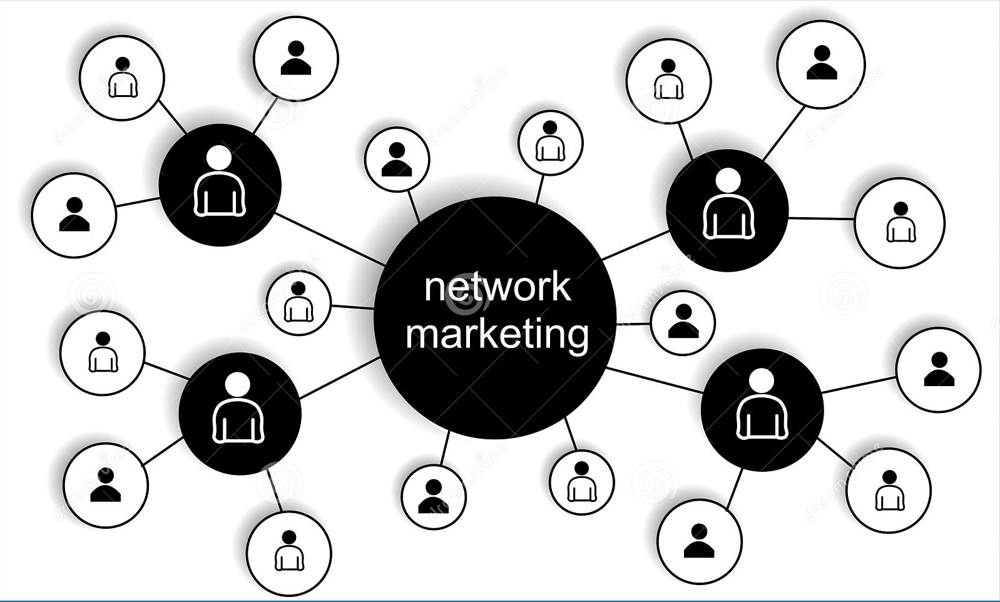

SERVICES

Website Design
As a website designer, I am an artist of the virtual canvas, combining aesthetics and functionality to create captivating online experiences. In this fast-paced world of technology and creativity, I find my passion and purpose in crafting websites that not only dazzle the eyes but also engage and delight the hearts of visitors.
Data Analyst
With a keen eye for detail and a strong analytical mindset, I thrive in the world of data exploration and interpretation. My mission is to uncover hidden patterns, extract meaningful insights, and turn raw information into actionable strategies.I am excited about the endless possibilities that data holds and the opportunity to make a meaningful impact through data analysis.
Content Writer
As a content writer, I embark on a journey where the realm of imagination merges seamlessly with the art of communication. Content is the lifeblood that fuels connections, shapes opinions, and builds bridges between diverse communities. As a wordsmith, I embrace the responsibility of crafting content that not only captivates audiences but also leaves a profound impact on their hearts and minds.

Network Marketing
I am a dedicated and enthusiastic Network Builder with a mission to connect, empower, and inspire individuals to reach their fullest potential.In this ever-changing world, I continuously adapt to emerging trends and cutting-edge technologies to stay at the forefront of the network marketing landscape. I am committed to making a positive impact in the lives of those I connect with, creating a ripple effect of success throughout the network.